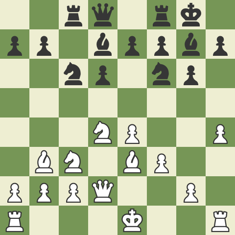

How to play the Sicilian Defense
- Respond to 1.e4 with ...c5: As Black, respond to White's 1.e4 opening move by playing 1...c5. This move challenges White's central pawn and establishes the Sicilian Defense.
- Aim for Center Control: Although you don't occupy the center with pawns initially, the Sicilian aims to challenge White's central control indirectly. Instead of directly contesting the center, Black focuses on creating imbalances and counterattacking opportunities.
- Develop Knights to c6 and Nf6: Develop your knights to c6 and Nf6 squares. The knight on c6 defends the d5 pawn and supports further development, while the knight on f6 prepares to challenge White's center.
- Prepare d5 Pawn Break: The typical plan for Black in the Sicilian is to play d7-d5, challenging White's central pawn on e4. However, it is important to prepare this break by reinforcing the d5 square and ensuring optimal piece placement.
- Consider Different Sicilian Variations: The Sicilian Opening has numerous variations, each with its own strategic ideas and tactical motifs. Some popular variations include the Najdorf, Dragon, Scheveningen, and Sveshnikov. Study and familiarize yourself with the particularities of the variation you choose to play.
- Balance Aggression and Solidity: The Sicilian often involves sharp and aggressive play. However, it is crucial to strike a balance between attacking opportunities and maintaining a solid position. Avoid unnecessary risks and prioritize sound piece development.
- Castle for King Safety: Ensure the safety of your king by castling early in the game. Kingside castling (O-O) is the most common choice in many Sicilian variations, providing a safe haven for your king while connecting the rooks.
- Be Mindful of Tactical Opportunities: The Sicilian can lead to tactical battles, with both sides vying for opportunities to launch attacks. Stay alert for tactical motifs such as piece sacrifices, pawn breaks, and tactical combinations that can arise in the Sicilian positions.
- Study Master Games: Study classic games played in the Sicilian Defense to deepen your understanding of typical plans, strategic ideas, and tactical patterns. Analyze games of renowned players like Garry Kasparov, Bobby Fischer, and Mikhail Tal to gain insights into effective Sicilian play.
- Develop Your Opening Repertoire: As the Sicilian offers a wide range of variations, it is advisable to develop a repertoire within the Sicilian Defense. Choose the variations that suit your style and study them in-depth to gain familiarity and confidence in playing the Sicilian.
